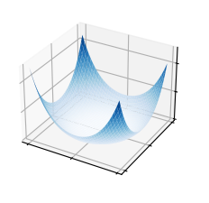

import matplotlib.pyplot as plt
import matplotlib.pyplot as plt
from matplotlib import cm
import numpy as np
plt.style.use('_mpl-gallery')
# Make data
X = np.arange(-5, 5, 0.25)
Y = np.arange(-5, 5, 0.25)
X, Y = np.meshgrid(X, Y)
# R = np.sqrt(X + Y)
Z = (-X**2 - Y**2)**2
# Plot the surface
fig, ax = plt.subplots(subplot_kw={"projection": "3d"})
ax.plot_surface(X, Y, Z, vmin=Z.min() * 2, cmap=cm.Blues)
ax.set(xticklabels=[],
yticklabels=[],
zticklabels=[])
plt.show()

# Стандартное импортирование plotly
import plotly.plotly as py
import plotly.graph_objs as go
from plotly.offline import iplot
# Использование cufflinks в офлайн-режиме
import cufflinks
cufflinks.go_offline()
---------------------------------------------------------------------------
ImportError Traceback (most recent call last)
Cell In[3], line 2
1 # Стандартное импортирование plotly
----> 2 import plotly.plotly as py
3 import plotly.graph_objs as go
4 from plotly.offline import iplot
File /opt/anaconda3/lib/python3.8/site-packages/plotly/plotly/__init__.py:4
1 from __future__ import absolute_import
2 from _plotly_future_ import _chart_studio_error
----> 4 _chart_studio_error("plotly")
File /opt/anaconda3/lib/python3.8/site-packages/_plotly_future_/__init__.py:43, in _chart_studio_error(submodule)
42 def _chart_studio_error(submodule):
---> 43 raise ImportError(
44 """
45 The plotly.{submodule} module is deprecated,
46 please install the chart-studio package and use the
47 chart_studio.{submodule} module instead.
48 """.format(
49 submodule=submodule
50 )
51 )
ImportError:
The plotly.plotly module is deprecated,
please install the chart-studio package and use the
chart_studio.plotly module instead.
from chart_studio import plotly